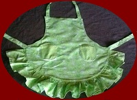
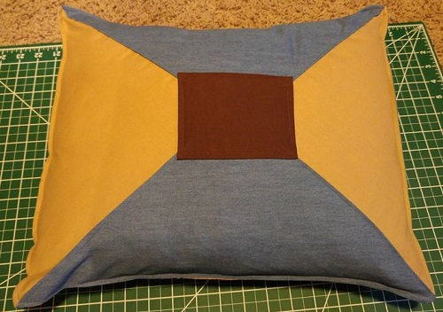

Featured Products

Green Apron
Size-Large
Perfect for your little baker!

Elsa Costume
Size-Medium
Inspired by the disney movie Frozen!


Take a chill pill(ow)
Okay I may have gotten to cutesy with that one. The idea I’m trying to relay is that any time I am decorating, be it my home or someone else’s, I make it a point to strike an appropriate balance. Too much of anything and you have a matchy-matchy, gaudy, or other unappealing synonyms…situation. Too little and it’s, well, boring. The actual middle of that spectrum is pretty much determined by the persons taste. So coming to you with no formal training or any other than my work, which is fairly biased to my own personal style, I am going to explain how I reached the close of this project. To start my heap of fabric was more than sufficient but my “pillows” were somewhat lacking. I had three actual bed pillows that frankly due to extensive use now only suited the role of throw pillow. My solution was to cut them in half, add some additional stuffing, make a new lining, and then make coordinating pillow covers. This seemed the best method for a few reasons, namely preferences change. This would allow my friend to change out pillow covers if he should decide to change up his space in the future.

In my sketches I provided him with some designs that I felt would suit his living room. My suggestion was to have three “plain” pillows, unadorned, and monochromatic. The reason behind this was to pull in the curtains without overshadowing them. I also suggested doing two that incorporated all three colors to keep things interesting. One was larger than all the rest and one the same size. By doing so there was still variety in style and size without sacrificing his minimalist style. He chose two layouts he liked and then I was off!
I was pretty fortunate to not run into any hiccups in the process. Envelope pillow covers are pretty straight forward and having the fabric equivalent of a pizza cutter is truly a miracle tool for ensuring straight cuts. When it came time to do the triangle pillow I probably spent way more time than necessary estimating the angles. Give me a break geometry class was like 14 years ago… For this particular pillow I did enlist the help of my on again off again friend the iron. To ensure that my angles looked correct when pushed into a convex position I only basted the seam initially and then pressed it so that it was straight and even.
I also decided I’d do a little Emeril Lagasse BAM! Sewing a top stitch over the blue portion not only keeps everything perfectly in place but also adds a little extra decorative feature. After I did this I decided I liked it so much I went around the inner square and the full outside edge of the pillow case. My last pillow was the larger pillow. My friend had read my blog post previously about the throw pillow I made for myself and after viewing it in person decided he would like something similar. Taking the same concept, I incorporated his colors and of course added a few little details to make it his own (or just because I get bored REALLY easily). I pleated the bow to give it more dimension and also did a top stitch around the edge. I feel like it might be my new favorite thing to add that truly professional look.
So now I’m done right? Wrong! I can’t do all of this work and not have at least one little extra up my sleeve. I still had some extra fabric and honestly no curtains are complete without having something to hold them back… so they are out of sight… Sounds contradictory but no one wants the sun blocked out at all times so having a coordinating tieback is pretty much a must.
I could have just made a simple loop to thread them into but honestly what fun would that be? Instead I decided to integrate the two browns together but still in a horizontal line. The placement of these tie backs would more than likely be right over top the blue so adding that would essentially be lost. As for closure I went with a button and loop for ease of use, he is still a guy. After my friend selected the buttons of his choice his furnishings were complete. I felt a certain amount of relief at having accomplished my task, as well as a small amount of “what do I do now?”. That being said anyone who may have any work they would like subtly embellished (yes I did do that) please feel free to call or email me All in all, it took several days of work, extended of course by the rowdy toddler that inhabits this house, and a little ingenuity but it was very satisfying and a wonderful addition to not only his home but my portfolio.